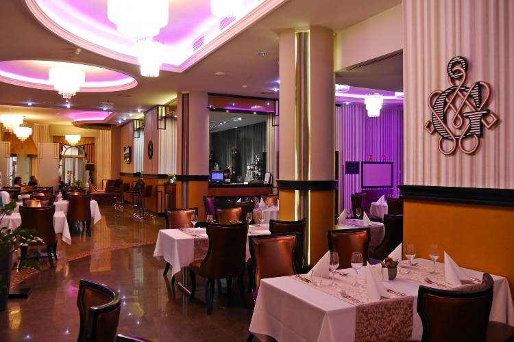

Étterem
Tudnivalók:
Tudnivalók az étteremmel kapcsolatban:

Nyitvatartás
| Hétfő | Kedd | Szerda | Csütörtök | Péntek | Szom. és Vas. |
|---|
| 8:00-20:00 | 8:00-20:00 | 8:00-20:00 | 8:00-20:00 | 8:00-20:00 | Zárva |
|---|
Étlap:
| Itallap |
|---|
| Coca Cola 2,5dl | ................................................................................................................................................................. | 550Ft |
|---|
| Coca Cola zero 2,5dl | .................................................................................................................................................................. | 550Ft |
|---|
| Sprite 2,5dl | .................................................................................................................................................................. | 550Ft |
|---|
| Fanta 2,5dl | .................................................................................................................................................................. | 550Ft |
|---|
| Lipton 2,5dl | .................................................................................................................................................................. | 550Ft |
|---|
| Ételek |
|---|
| Levesek |
|---|
| Gulyásleves | .............................................................................................................................................................. | 980Ft |
|---|
| Gyümölcsleves | .............................................................................................................................................................. | 1280Ft |
|---|
| Csontleves | .............................................................................................................................................................. | 1080Ft |
|---|
| Lebbencsleves | .............................................................................................................................................................. | 1180Ft |
|---|
| Főételek |
|---|
| Túróscsusza | .............................................................................................................................................................. | 1180Ft |
|---|
| Bolognai spagetti | .............................................................................................................................................................. | 1180Ft |
|---|
| Rántott csirkemell sültkrumplival | ............................................................................................................................................................. | 1780Ft |
|---|
| Füstölt sajttal töltött csirkemell | ............................................................................................................................................................. | 1499Ft |
|---|
| Cigánypecsenye | ............................................................................................................................................................... | 1499Ft |
|---|
| Marhapaprikás nokedlivel | .............................................................................................................................................................. | 1399Ft |
|---|
| Tejfölös sajtos tészta | .............................................................................................................................................................. | 1199Ft |
|---|
| Rántott sajt | ............................................................................................................................................................... | 1399Ft |
|---|